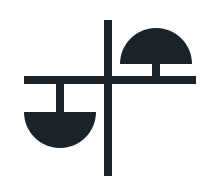
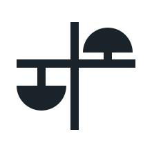
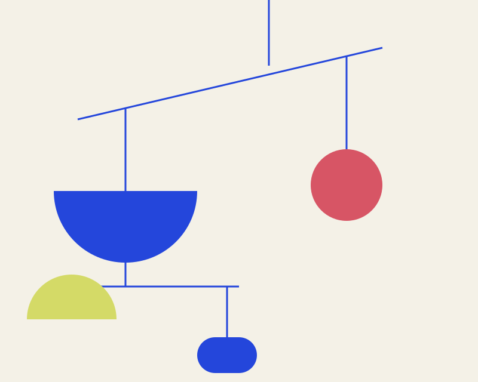
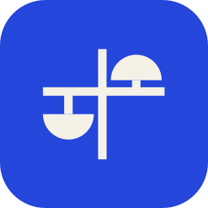

Room for
your working
world.
A place for the notes, projects, and knowledge that make your work yours. Different shapes. One useful center.
Explore the balanceWork has
more than one shape.
The quick thought. The long project. The thing you’ll need again.
Monolith is a proposed workspace for keeping your work information together, with room for the way you think and the way your team works.
Its purpose is to give OpenJM current, real information to work with—so assistance can reach beyond generated text and media into the work itself.
Everyday Orbit is a brand proposal for that purpose. The workspace and integration are still to be built.
A different balance.
The same world.
Some days, a project takes the lead. Other days, it’s a thought worth keeping. Everything still belongs.
Arrangement 1 of 3
A small set of parts.
A world of possibilities.
An identity built from balance, openness, and a few shapes that feel at home together.

A little asymmetry.
A lot of character.
A vertical stem holds an offset crossbar. Opposing solid semicircles give the mark its balance, without making everything the same.


x is the radius of one semicircular weight.
Small, still itself.
Use the simplified mark at 24px and below. Thicker supports keep the structure legible.

Color with room to play.
Chalk and cobalt set the scene. Ink brings clarity. Coral and citrus add a little life.
- Chalk#F4F1E7
- Cobalt#2446DB
- Ink#192329
- Coral#D75565
- Citrus#D4DA67
For text: ink on chalk or citrus; chalk on cobalt or ink. Coral is a decorative color—its name and value sit on chalk here.
Instrument Sans
Clear thoughts.
Open possibilities.
Aa Bb Cc Dd Ee Ff Gg Hh Ii Jj Kk Ll Mm
0123456789
The everyday voice. Wordmark, headings, and body.
Newsreader Italic
A little space
for the unexpected.
Aa Bb Cc Dd Ee Ff Gg Hh Ii Jj Kk Ll Mm
0123456789
The expressive voice. A phrase, a pause, a human touch.

The parts keep moving.
Discs, semicircles, and rounded weights hang from a shared structure. Change their scale and arrangement; keep the connections light.
It’s a physical mobile: familiar, playful, and held together.
Download chalk pattern Download cobalt pattern

At home in
your everyday.
From the first tap to the next blank page. Illustrative applications of the proposed identity.

Room for your
working world.
A place to begin.
Your thoughts, your plans, your useful things.
On the table
3 items| Name | Kind | Next step |
|---|---|---|
| The next chapter | Project | Shape the brief |
| A thought from Tuesday | Note | Make some room |
| Things worth keeping | Knowledge | Bring it together |
Keep the context close.
The proposed purpose: work information that OpenJM can use to help with real work.
Take the parts.
Make room.
Eight self-contained SVG assets. Lettering is outlined, so the identity travels with the artwork.
- Primary symbolSVG
- Reversed symbolSVG
- Simplified symbolSVG
- Primary wordmarkSVG
- Reversed wordmarkSVG
- Primary lockupSVG
- Reversed lockupSVG
- Cobalt app iconSVG


The two mobile patterns are available in the toolkit above. This identity is a proposal; these assets do not establish Monolith’s permanent brand.